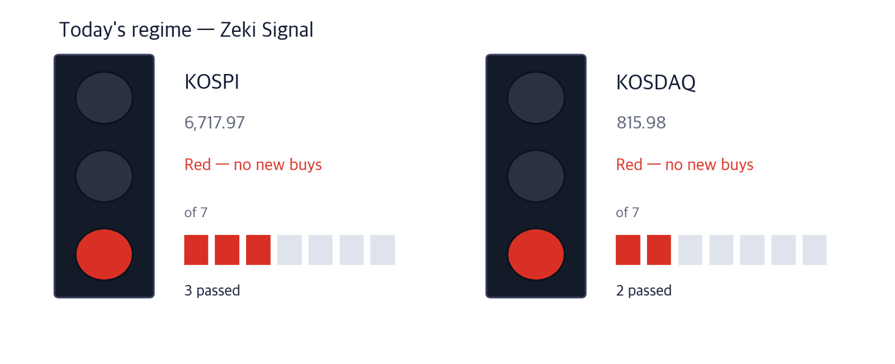
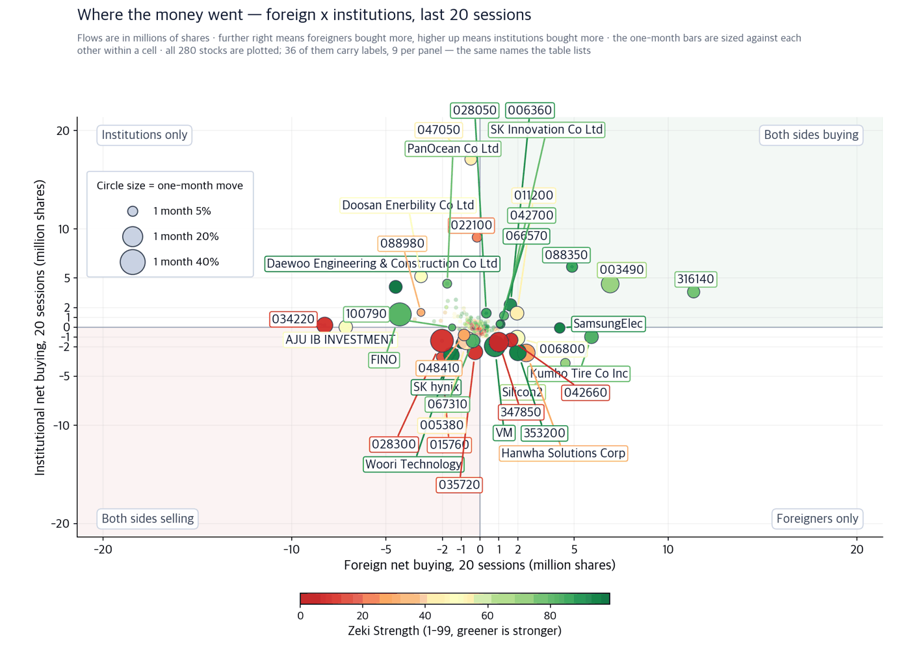
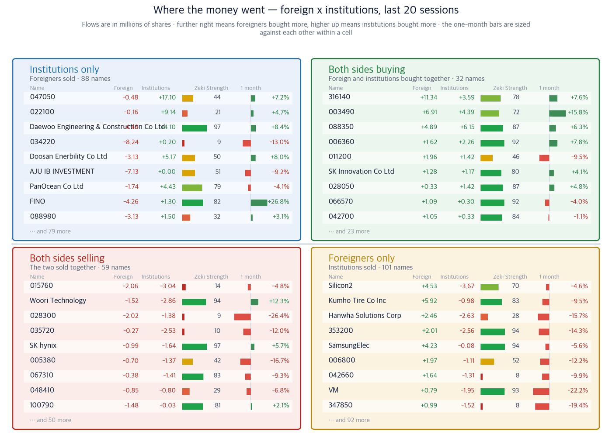

The Fed raised rates for the first time in three years — and named the Middle East
17 September 2026 · every figure is a 16 September close
KOSPI 6,717.97 (+1.37%) | KOSDAQ 815.98 (+0.44%) | Dow 51,462.55 (−1.21%) | Fed funds 3.75-4.00% | Zeki Signal Red |

How to read this
| Lit lamp | Today's regime. Green means buyers have the edge, yellow means wait, red means no new buys. |
| Filled squares | How many of the 7 conditions passed. More filled means firmer market structure. |
| All filled but not green | Something else pulled the grade down one step. The reason is printed under the lamp. |
The Zeki Signal reduces seven market tests to one light. Green means a buyable regime, yellow means stand aside, red means do not add. Both KOSPI and KOSDAQ are red today.
What to do now
Executive summary — three conclusions first
- The Fed raised its policy rate by a quarter point on 16 September, its first increase since July 2023, and the vote was unanimous. The statement named geopolitical uncertainty as the reason: the seven-month war between the United States and Iran, and the energy prices it has pushed up. The median dot points to one more rise this year.
- From that same root, the Seoul papers picked defence, refining and construction as the sectors that gain. Measured on 16 September closes, only two of the three have the prices to match. Refining ranks 2nd of our 46 sector groups and construction 4th. Defence ranks 33rd and has fallen eight places in a week, so we made no defence name today.
- The thickest evidence sits in the power grid, not the Gulf. What data centres cannot buy is not generation but transformers and cable. Gaon Cable is up 52.0% over the month and both foreign and domestic institutions bought it. It is the only name today that meets all four of our tests.
So what do we do: Watch the first 30 minutes in Seoul: how far the grid names and the refiners follow last night’s New York fall. Falling together on a rate-rise day is ordinary. The names that separate there are the story.
First, the week’s economics
If you remember one number this week, make it the US 10-year Treasury yield at 5.01%, the highest in 19 years. When the policy rate rises and the long end rises with it, the promise to bring inflation down is not yet fully believed. The won at 1,378.38 to the dollar comes from the same place.
| Date | What to watch | What it changes |
|---|
| 17 Sep, Seoul open | How much of New York’s fall Seoul takes | The Dow fell −1.21%. If KOSPI gives back less than half of that, domestic demand held |
| 18 Sep | Signing date for the Korea-US memorandum | A delay shakes the nuclear construction names again |
| 22 Sep | Investment briefing to the National Assembly | A Westinghouse stake settled below 10% trims the nuclear case |
| 21 Sep | Bloom Energy joins the S&P 500 | Orders continuing after the move keeps the Korean suppliers’ story alive |
Why — the evidence
Checked one by one against prices and flows
Theme 1 · The grid — the bottleneck is connection, not generation
The American grid is short of more than generation. Transformers and lines are old, and a connection review takes five years on average. That is why fuel cells, which can be standing within four months where a gas pipe already runs, became the answer. Names in that supply chain rose together in Seoul on 16 September. We kept only the ones that trade heavily and whose prices have already answered.
| Gaon Cable (000500) | Well grounded |
| Close 247,000 won · 16 Sep +0.41% · one month +52.0% · three months +30.4% · Zeki Strength 99 · −21.2% from the 52-week high · 72600m won traded a day |
Who a cable maker · What the replacement of high-voltage grid · When through the 16 September close
Where on American and Korean grid projects · Why because every new data centre runs short of line before anything else
How cable turns into revenue quickly, so it reaches earnings first.
Confirming signal — the 2 September close of 201,000 won is where the two-week run began. Finishing this week above it keeps the trend intact.
Would be wrong — a close back below that 2 September level removes the basis, as would either foreign or domestic institutions turning net sellers over 20 sessions.
| LS Electric (010120) | Needs checking |
| Close 199,000 won · 16 Sep +1.17% · one month −4.8% · three months −22.0% · Zeki Strength 93 · −37.5% from the 52-week high · 83800m won traded a day |
Who a power-equipment maker · What transformer orders from US hyperscalers · When through 16 September
Where at North American data centre sites · Why because only a handful of firms worldwide can build ultra-high-voltage units
How long lead times spread one contract across several years of revenue.
Confirming signal — reclaiming the 20-day average at 201,360 won would end the month’s slide.
Would be wrong — finishing the week below the 2 September close of 195,700 won leaves foreign buying with no price behind it.
| Sanil Electric (062040) | Needs checking |
| Close 195,800 won · 16 Sep +3.27% · one month +9.3% · three months −22.0% · Zeki Strength 79 · −41.3% from the 52-week high · 66000m won traded a day |
Who a transformer maker · What North American replacement demand · When through 16 September
Where in the US transmission market · Why because an ageing fleet has to be replaced all at once
How a backlog converts into the following year’s revenue in order.
Confirming signal — holding above the 20-day average of 189,915 won turns institutional buying into price.
Would be wrong — Zeki Strength is 79 today. Below 70 it is no longer a candidate by our standard.
Theme 2 · 8-inch foundry — the line everyone called old is now scarce
As the leading foundries moved to 12-inch advanced nodes they cut their 8-inch lines. But power semiconductors and sensors are made on 8-inch, and demand for them grows with every data centre and every robot. TrendForce expects world 8-inch capacity to fall 2.4% this year. Shrinking supply and rising demand now overlap.
| DB HiTek (000990) | Grounded |
| Close 126,200 won · 16 Sep +5.34% · one month +29.3% · three months −20.4% · Zeki Strength 91 · −42.8% from the 52-week high · 100000m won traded a day |
Who a Korean foundry · What the 8-inch shortage · When through September
Where on its domestic 8-inch lines · Why because the leaders cut 8-inch and left customers nowhere to go
How with fixed costs unchanged, higher utilisation lifts profit first.
Confirming signal — the run began from the 2 September close of 89,200 won. While it holds above the 20-day average of 99,915 won the institutions are still holding.
Would be wrong — foreign and domestic flows disagree here. Unless institutional 20-session buying turns positive, the rise rests on one side only.
Theme 3 · The Gulf gap — Korea supplies what America cannot
In a 16 September report iM Securities picked defence, refining and construction as the sectors that gain after the war. America has burned through its interceptor stock and will not be back to pre-war levels until around 2029. Damaged refineries have widened refining margins. And post-war energy infrastructure spending brings orders to Korean builders with the right experience. We carried only the two names where price and flows both back the story.
| Samsung E&A (028050) | Grounded |
| Close 50,200 won · 16 Sep −1.76% · one month +4.8% · three months −4.4% · Zeki Strength 87 · −22.0% from the 52-week high · 77900m won traded a day |
Who an engineering contractor · What energy plant work in the Gulf and the United States · When through 16 September
Where in Saudi Arabia and Texas · Why because damaged plant must be rebuilt and gas generation expanded
How an award is recognised as revenue across the build period.
Confirming signal — foreign and domestic institutions both bought over 20 sessions. Holding above the 20-day average of 48,017 won means that buying persists.
Would be wrong — Zeki Strength is 87. A fall below the 2 September close of 43,700 won erases the two-week gain entirely.
| Daewoo E&C (047040) | Grounded |
| Close 18,610 won · 16 Sep −3.67% · one month +8.4% · three months −25.0% · Zeki Strength 97 · −49.9% from the 52-week high · 177100m won traded a day |
Who a builder · What a possible share of the US combined-cycle project · When through 16 September
Where at the Encinal site in Texas · Why because the 30-trillion-won project is named as the first US investment
How confirmed participation adds to the overseas backlog in one step.
Confirming signal — if the 22 September briefing names the contractors, that day’s volume will show it. Holding above the 20-day average of 18,172 won says the same.
Would be wrong — foreigners sold across 20 sessions. If institutional buying also turns negative, nothing explains the rise.
Two themes we dropped today
Defence got the biggest play in the papers. America needs years to rebuild its interceptor stock, and Korean makers step in meanwhile. The story holds. The prices do not. LIG Defense & Aerospace is down 16.0% over the month and sits below its 50-day average of 718,760 won. Zeki Strength has fallen from 79 two weeks ago to 66. As a sector it ranks 33rd of 46 and has dropped eight places in a week. Nuclear is the same. When the Assembly briefing slipped to the 22nd, KEPCO E&C fell 9.38% in a day, and having risen 39.2% over the month it has room to give back more. Neither theme becomes a name today.
Excluded Defence and nuclear are out of today’s list.
Today’s findings on one page
| Theme | Name | Zeki Strength | Weight of evidence |
|---|
| Power grid | Gaon Cable (000500) | 99 | Well grounded |
| Power grid | LS Electric (010120) | 93 | Needs checking |
| Power grid | Sanil Electric (062040) | 79 | Needs checking |
| 8-inch foundry | DB HiTek (000990) | 91 | Grounded |
| Gulf supply gap | Samsung E&A (028050) | 87 | Grounded |
| Gulf supply gap | Daewoo E&C (047040) | 97 | Grounded |
| Defence (dropped) | LIG Defense & Aerospace (079550) | 66 | Needs checking |
| Nuclear (dropped) | KEPCO E&C (052690) | 70 | Needs checking |
Weight of evidence — we counted four tests
Did the price rise over the month; is Zeki Strength above 90; did foreign investors buy net over 20 sessions; did domestic institutions do the same. The count sets the label, not a human. The two flow columns are as of 9 September.
| Name | ①up over
the month | ②Strength
90+ | ③foreign
net buy | ④institutional
net buy | Met | Weight of evidence |
|---|
| Gaon Cable (000500) | O | O | O | O | 4/4 | Well grounded |
| LS Electric (010120) | X | O | O | X | 2/4 | Needs checking |
| Sanil Electric (062040) | O | X | X | O | 2/4 | Needs checking |
| DB HiTek (000990) | O | O | O | X | 3/4 | Grounded |
| Samsung E&A (028050) | O | X | O | O | 3/4 | Grounded |
| Daewoo E&C (047040) | O | O | X | O | 3/4 | Grounded |
| LIG Defense & Aerospace (079550) | X | X | O | X | 1/4 | Needs checking |
| KEPCO E&C (052690) | O | X | X | O | 2/4 | Needs checking |
Where the institutions and foreigners went

How to read this
| One dot | One stock. Its position is simply its two values, and the horizontal and vertical rules through the middle are the centre line for each. The four corner labels say what each quadrant means. |
| Dot size | The last month's move, up or down. Bigger means it moved more. |
| Dot colour | Zeki Strength — greener is stronger. |
| Only 30 | Korean and ticker labels overlap beyond that. The names left out sit near the centre, where little moved. |

How to read this
| Four panels | The two measures are each compared with a centre line. Top right cleared both, bottom left cleared neither, and the other two cleared one. Each panel's title is a plain sentence saying what that means. |
| The two middle columns | Where the two periods are compared. If they carry letters A-E, that is the standard scale this industry uses: A heavy buying, B buying, C an even split, D selling, E heavy selling (a rank of all names in fifths, so A is the top 20%). If they carry numbers, that is net buying over the period. |
| Nine per panel | The largest movers in that panel. The rest are counted at the foot of the panel. These same nine per panel are the names labelled on the scatter. |
| Month bar | Zero at the centre: right is up, left is down. Compare lengths within one panel only — each panel is scaled to itself. |
| Zeki Strength | A 1-99 rank. Longer and greener means the stock's price is stronger than the market. |
Scanned all 284 stocks in our flow data, excluding those trading under 3bn won a day.
One limit first. Korea discloses foreign and institutional net buying daily, but our mirror lags: the last recorded day differs by stock and none reach today. Each row carries its own as-of date.
Foreign investors bought most
| Stock | Net shares, 20 days | RS | 1 month | As of |
|---|
| 316140 | +11,338,438 | 78 | +7.6% | 09-09 |
| 003490 | +6,908,785 | 72 | +15.8% | 09-09 |
| 073240 | +5,916,691 | 83 | -9.5% | 09-09 |
| 088350 | +4,886,060 | 87 | +6.3% | 09-09 |
| 257720 | +4,530,158 | 70 | -4.6% | 09-09 |
Foreign investors sold most
| Stock | Net shares, 20 days | RS | 1 month | As of |
|---|
| 034220 | -8,239,713 | 9 | -13.0% | 09-09 |
| 027360 | -7,125,717 | 51 | -9.2% | 09-09 |
| 047040 | -4,475,914 | 97 | +8.4% | 09-09 |
| 033790 | -4,260,883 | 82 | +26.8% | 09-09 |
| 232140 | -3,469,381 | 23 | +11.5% | 09-09 |
Institutions bought most
| Stock | Net shares, 20 days | RS | 1 month | As of |
|---|
| 047050 | +17,099,281 | 44 | +7.2% | 09-09 |
| 022100 | +9,143,282 | 21 | +4.7% | 09-09 |
| 088350 | +6,147,840 | 87 | +6.3% | 09-09 |
| 034020 | +5,167,690 | 50 | +8.0% | 09-09 |
| 028670 | +4,427,162 | 79 | -4.1% | 09-09 |
Institutions sold most
| Stock | Net shares, 20 days | RS | 1 month | As of |
|---|
| 257720 | -3,673,312 | 70 | -4.6% | 09-09 |
| 015760 | -3,037,380 | 14 | -4.8% | 09-09 |
| 032820 | -2,855,185 | 94 | +12.3% | 09-09 |
| 009830 | -2,626,525 | 28 | -15.7% | 09-09 |
| 353200 | -2,561,847 | 94 | -14.3% | 09-09 |
Did the money follow the names we found
A story can fit the price and still have no money behind it, so we look at the flows separately. These are the names above, counted in shares, as of 9 September. The five sessions since are not yet disclosed.
| Name | Foreign, 20 sessions | Institutions, 20 sessions | 16 Sep change |
|---|
| Gaon Cable (000500) | +256,748 | +363,589 | +0.41% |
| LS Electric (010120) | +629,386 | -312,777 | +1.17% |
| Sanil Electric (062040) | -322,095 | +325,878 | +3.27% |
| DB HiTek (000990) | +47,015 | -207,383 | +5.34% |
| Samsung E&A (028050) | +332,085 | +1,419,095 | −1.76% |
| Daewoo E&C (047040) | -4,475,914 | +4,096,763 | −3.67% |
| LIG Defense & Aerospace (079550) | +115,723 | -206,442 | — |
| KEPCO E&C (052690) | -733,497 | +218,633 | −9.38% |
How the names we ran have done
0 of the 36 names run since 09/10 have 5 trading days behind them. Base: close on the day run; benchmark: KOSPI over the same days.
What it is. A record of the companies we found in the newspapers and named in this digest, marked at that day's close, then counted as the price moves. Grouped by how firm the evidence was.
What it is for. To keep a number on whether names picked from the news actually perform. Each name is recorded on the day it ran, so the winners cannot be chosen afterwards.
What it is not. Not a recommendation, not something we bought, and not yet a verdict. That comes once, from a pre-registered test, when both markets together reach 60 cases.
| Weight of evidence | Names | Up | Down | Beat
KOSPI | Avg excess |
|---|
| No name has 5 trading days behind it yet. The 36 names run are on record and will be counted here as the days fill. |
72 cases collected so far. Until the test fires we only count ups and downs. 36 names without 5 trading days yet are excluded. Paper tally; no trading costs deducted.
Intraday checklist — what to watch this week
- First 30 minutes — whether Gaon Cable holds above its 2 September close of 201,000 won. Below that, half the month’s gain is gone.
- First 30 minutes — whether foreign futures buying opens positive. Foreigners buying the day after a rise means won assets held.
- Last 30 minutes — whether DB HiTek closes with volume still above its 50-day average. That is where you see if the institutional buying is still there.
Sources: the Korea Economic Daily (한국경제), 17 September edition; iM Securities industry report; Korea Investment & Securities; DS Investment & Securities; TrendForce; the FOMC September statement and projections. Prices are our own calculations on 16 September closes.
This digest carries names filtered by figures we calculate ourselves. It is not individual investment advice and does not recommend buying or selling any security. Every grade and rank shown is our own calculation, on a simulated portfolio basis. Investing carries risk of loss of capital.
This report is for information only and is not individual investment advice. ZekiRex™ Apex KR runs a rules-based simulated portfolio of 1 billion won — there is no real account, no order and no fill. The performance shown excludes commissions, taxes and slippage, and the price data omits companies that were delisted, which biases the result upward (survivorship bias). Past performance does not guarantee future results, and investing carries risk of loss of capital.
This is the Rex Way, ZekiRex™